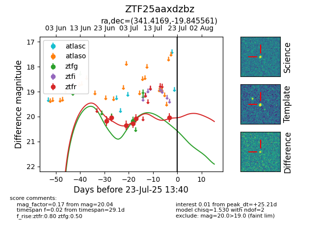

Target ZTF25aaxdzbz at 2025-07-23 11:52, see:
FINK: fink-portal.org/ZTF25aaxdzbz
Lasair: lasair-ztf.lsst.ac.uk/objects/ZTF25aaxdzbz
ALeRCE: alerce.online/object/ZTF25aaxdzbz
alt names
ZTF25aaxdzbz (ztf,fink)
coordinates:
equatorial (ra, dec) = (341.4169,-19.84556)
galactic (l, b) = (40.3388,-60.34389)
photometry
last ztfg=20.18, ztfr=20.04
1 ztfg, 6 ztfr detections
